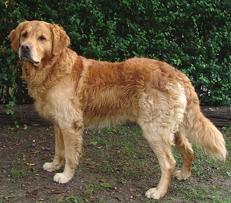

Animal Archive
View information on dogs

Interesting facts about dog breeds:
- The Basenji, an African breed, is known as the "barkless" dog.
- The Dalmatian breed is born without spots and develops them as they grow older.
- Chihuahuas, the smallest breed, are believed to have been sacred to the ancient Aztecs.
View information on cats
Interesting facts about cat breeds:
- The Sphynx cat is famous for its hairless appearance.
- There are over 70 recognized cat breeds.
- Some popular breeds include the Persian, Maine Coon, and Siamese.
- The Savannah cat is a hybrid breed created by crossing a domestic cat with a serval.